原子物理整理*
啃下大杂烩
31日考试 L1-311
…持续更新中…
发现错误请私我，会非常感谢你
PDF 不保新
考完结束
公式汇集
考试无公式
| Coulomb 散射 | 瞄准角度与散射角 | \(b=\frac{a}{2}\cot \frac{\theta}{2},a=\frac{1}{4\pi\epsilon_0}\frac{Z_1Z_2e^2}{E_k}\) |
| Rutherford 散射 | 散射角大于 θ 粒子数占比 | \(\frac{\Delta N}{N}=nt\pi b^2,b=\frac{a}{2}\cot \frac{\theta}{2}\) |
| 角度对应的微分散射截面 | \(\frac{\mathrm{d}\sigma}{\mathrm{d}\Omega }=\frac{a^2}{16\sin^4 \frac{\theta}{2}}\) | |
| Rydberg 里德伯公式 | \(\nu=\frac{1}{\lambda}=R_H \left[ \frac{1}{n^2}-\frac{1}{n'^2} \right]\) | |
| Bohr 原子 | 半径、能量 | \(r_n=\frac{4\pi \epsilon_0\hbar^2}{me^2},E_n=\frac{me^4}{(4\pi\epsilon)^22\hbar^2n^2}\) |
| 波粒二项性 | \(p=\frac{h}{\lambda},E=h\nu\) | |
| Schrodinger 方程 | 定态一维 | \(\left[ -\frac{\hbar}{2m}\nabla^2+V \right]\psi(x)=E\psi(x)\) |
| 不确定关系 | \(\Delta x\Delta p\geq \frac{\hbar}{2},\Delta t\Delta E\geq \frac{\hbar}{2}\) | |
| Bohr 磁子 | \(\mu_B=\frac{e\hbar}{2m},\mu_l=\sqrt{l(l+1)}\mu_B\) | |
| Lande g 因子 | 将磁矩变为 z 方向因子 | \(g=\frac{3}{2}+\frac{S^2-L^{2}}{2J^{2}}\) |
| 角动量量子化 | \(L=\sqrt{l(l+1)}\hbar;S=\sqrt{s(s+1)}\hbar;J=\sqrt{j(j+1)}\hbar\) | |
| S-G 实验 | 分裂距离 | \(z=\mu_z \frac{\partial B_z}{\partial z}\frac{Dd}{3kT}\) |
| Compton 康普顿散射 | 出射与入射光波长 | \(\lambda'-\lambda=\frac{h}{m_{e}c^2}(1-\cos \theta)\) |
| 散射光子能量 | \(h\nu=\frac{h\nu}{1+r(1-\cos\theta)},r=\frac{h\nu}{m c^2}\) | |
| 反冲电子能量 | \(E=h\nu-h\nu\) |
每章整理
第一章・Rutherford 模型
Comlomb 散射
写法：能量守恒（动势能）
Rutherford 散射
散射角大于 θ 的粒子数占比
\begin{gather*} \frac{\Delta N}{N}=nt\pi b^2,b=\frac{a}{2}\cot \frac{\theta}{2} \end{gather*}1.2;1.6
角度对应的微分散射截面
\begin{equation*} \frac{\mathrm{d}\sigma}{\mathrm{d}\Omega }=\frac{a^2}{16\sin^4 \frac{\theta}{2}} \end{equation*}
原子模型困难：
原子很稳定，没有电磁损失（绕圈电子应当会产生电磁场导致能拉损失）
原子可一模一样，行星结构形成很难
再生：行星平衡容易被打破
第二章・Bohr
光谱 Rydberg 里德伯公式
Bohr 模型
其它： Frank-Hertz 实验； Compton 散射 都得到量子化结果
第三章・量子力学初步
波粒二项
不确定关系
一般使用 \(\geq\frac{\hbar}{2}\)
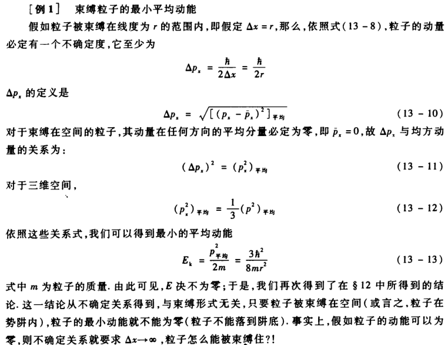 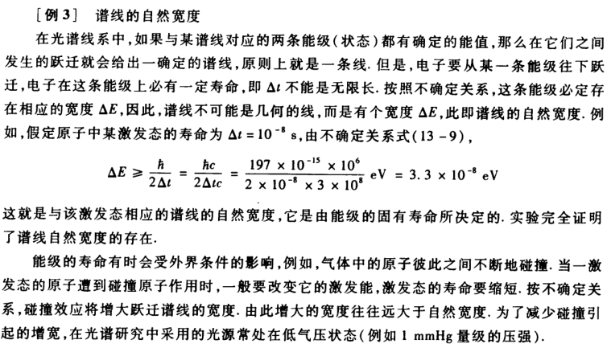
薛定谔方程
下面是定态方程，E 是能量（本征值）。 求解过程：
- 写方程。
- 写边界条件： 边界连续性、归一化条件 \(\int_{-\infty}^{\infty}\psi^*\psi \mathrm{d}x=1\)
- 写通解：
- \(V>E\) : \(\psi=A \mathrm{e}^{kx}+B \mathrm{e}^{-kx}\),\(k=\sqrt{\frac{2m}{k}(V-E)}\)
- \(V
- 代入边界条件
归一化条件：
\begin{gather*} \int_{-\infty}^{\infty}\psi^*\psi \mathrm{d}x=1 \end{gather*}- 无限位能井
第四章・原子精细结构
轨道磁矩和角动量量子化
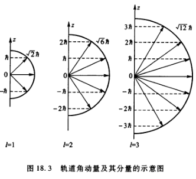
电子自旋假设：除了轨道角动量还有自旋角动量 \(S=\sqrt{s(s+1)}\hbar,s=\frac{1}{2},s_z=\pm \frac{1}{2}\hbar\)
Lande 因子 \(g\)
任意角动量 j 有 \(\mu=-\sqrt{j(j+1)}g_j\mu_B,\mu_{jz}=-m_jg_j\mu_B\)
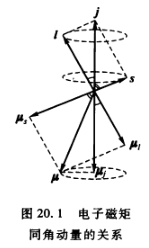
认电子状态
电子状态表示 \(^2S_{\frac{1}{2}}\) 其中：S 表示 \(l=0\) ; 右下角 \(\frac{1}{2}\) 表示 \(j=\frac{1}{2}\) ; 左上角 2 表示 \(2s+1=2\)
左上角： 2s+1
左下角：原子序数
右下角：
| 2s+1 | |
| 原子序数 | s |
| S | ||
| P | l=1 | \(j=\frac{1}{2},\frac{3}{2}\) |
SG: H 原子进入不均匀磁场出现分裂谱线
Zeeman: 外磁场下原子能级分裂
反常 Zeeman：推测有自旋
原子组态
如 sp 耦合
- 当 l-s 耦合， \(s_1=s_2=\frac{1}{2},l_1=0,l_2=1\) 于是 \(J=0,1,2\) 可表示 \(^1P_1, ^3P_2, ^3P_1, ^3P_0\)
- 当 j-j 耦合， \(j_1=\frac{1}{2},j_2=\frac{1}{2},\frac{3}{2}\) 则 \(J=0,1,1,2\) 表示 \(\left( \frac{1}{2},\frac{3}{2} \right)_2\),\(\left( \frac{1}{2},\frac{3}{2} \right)_1\),\(\left( \frac{1}{2},\frac{1}{2} \right)_1\),\(\left( \frac{1}{2},\frac{1}{2} \right)_0\)
还要考虑泡利不相容：
只有对 l-s 耦合，有洪特、朗德间隔约束：
- 洪特规则：当某原子态具有 S 最大时，所处能级未知最低，对同一S 以 L 最大的为最低
- 朗德间隔定则：三重态中，一对相邻能级之间间隔与两个 J 值中交大的值成正比。
上面的我也看不懂
GPT 老师的傻瓜教学
- 电子状态符号的完整结构
电子状态符号通常写成 \( ^{2S+1}L_J \)，它包含以下信息：
- 自旋多重度 (\( 2S+1 \))：与总自旋量子数 \( S \) 相关，表示电子的自旋排布。
- 总轨道角动量符号 (\( L \))：与总轨道角动量 \( L \) 的数值相关，决定了状态的空间对称性。
- 总角动量量子数 (\( J \))：由 \( L \) 和 \( S \) 矢量相加得到的总角动量。
例如：
- \( ^3P_2 \)：表示 \( S = 1 \), \( L = 1 \), \( J = 2 \) 的态。
- \( ^1D_2 \)：表示 \( S = 0 \), \( L = 2 \), \( J = 2 \) 的态。
- 逐步理解符号的每一部分
(1) 自旋多重度 (\( 2S+1 \))
- 单个电子的自旋 \( s = \frac{1}{2} \)，其可能取值为 \( m_s = \pm\frac{1}{2} \)。
- 总自旋 \( S \) 是所有电子的 \( m_s \) 的向量和【大写小写区别】。
- 如果有 \( n \) 个未配对电子，每个 \( s = \frac{1}{2} \)，则最大 \( S = n \times \frac{1}{2} \)。
- 如果电子都成对，则 \( S = 0 \)。
写在左上角的 自旋多重度 是总自旋量子数的状态数，公式为： \[ 2S + 1 \] 它表示系统的自旋排列可能性。例如：
- \( S = 1 \) 时，自旋多重度为 \( 3 \)，称为三重态。
- \( S = 0 \) 时，自旋多重度为 \( 1 \)，称为单重态。
(2) 总轨道角动量 (\( L \))
- 单个电子的轨道角动量量子数为 \( l \)，对于 \( s, p, d, f \) 等轨道：
- \( s \): \( l = 0 \)
- \( p \): \( l = 1 \)
- \( d \): \( l = 2 \)
- \( f \): \( l = 3 \)
- 总轨道角动量 \( L \) 是所有电子的轨道角动量之和：
\[ L = \sum m_l \]
- 符号对应如下：
- \( L = 0 \)：\( S \)
- \( L = 1 \)：\( P \)
- \( L = 2 \)：\( D \)
- \( L = 3 \)：\( F \)
- 以此类推…
(3) 总角动量 (\( J \))
- 总角动量 \( J \) 是 \( L \) 和 \( S \) 的矢量和：
\[ J = |L - S|, \dots, (L + S) \]
- \( J \) 的范围由 \( L \) 和 \( S \) 决定。
- 例如：若 \( L = 2, S = 1 \)，则 \( J = 1, 2, 3 \)。
- 如何从电子排布推导 \( ^{2S+1}L_J \)
让我们通过 \( p^4 \) 配置为例，逐步推导电子状态符号。
电子排布
- \( p \)-轨道有三个子轨道 (\( m_l = -1, 0, +1 \))，每个子轨道最多容纳两个电子（自旋 \( m_s = \pm \frac{1}{2} \)）。
- \( p^4 \) 表示共有 4 个电子填入这三个子轨道。
(1) 确定 \( S \)
- **电子自旋排布**：
- \( p^4 \) 中有 4 个电子，即 2 个配对电子、2 个未配对电子。
- 配对电子的自旋互相抵消，剩余两个未配对电子贡献 \( S = 1 \)。
- \( S = 1 \) 和 \( S = 0 \) 都可能，需逐一考虑。
(2) 确定 \( L \)
- **轨道排布**：
- 假设两个电子在 \( m_l = -1, +1 \) 上（未配对），两个在 \( m_l = 0 \)（配对）。
- \( L = 1 + (-1) + 0 + 0 = 0 \)。
- 换种排布：若两个未配对电子分别位于 \( m_l = 0, +1 \)，则：
- \( L = 0 + 1 + (-1) = 1 \)。
- 再换种排布：若两个未配对电子分别位于 \( m_l = +1, +1 \)，则：
- \( L = 1 + 1 + (-1) + 0 = 2 \)。
(3) 组合 \( LSJ \) 根据 \( S \)、\( L \)、\( J \) 的可能值，列出态符号：
| \( S \) | \( L \) | 态符号 | \( J \) 范围 |
|---|---|---|---|
| 1 | 2 | \( ^3D \) | \( 1, 2, 3 \) |
| 1 | 1 | \( ^3P \) | \( 0, 1, 2 \) |
| 1 | 0 | \( ^3S \) | \( 1 \) |
| 0 | 2 | \( ^1D \) | \( 2 \) |
| 0 | 1 | \( ^1P \) | \( 1 \) |
| 0 | 0 | \( ^1S \) | \( 0 \) |
最低能量态 根据 Hund 规则：
- \( S \) 最大优先。
- \( L \) 最大优先。
- 若考虑 \( J \)，通常 \( J \) 最小。
因此，最低能量态是 \( ^3P_0 \)。
总结： 电子有磁矩，在外磁场中使用 \(\mu_z=mg \mu\)
多电子耦合
- sl 耦合： \(\Delta S=0,\Delta L=0,\pm 1,\Delta J=0,\pm 1\)
- jj 耦合： $Δ j=0,± 1,$
自旋
Lamour 进动 量子表示
三个实验推出有自旋
- S-G: Ag 在磁场有两个偏转（一个外层电子本应只有一个）
- 精细结构光谱：
- 反常 Zeeman 塞曼：
耦合？
s-1,p-3,d-5
\begin{gather*} \mu..=-\frac{e}{} F=\vec{\mu} \frac{\mathrm{d}B_z}{\mathrm{d}z } \end{gather*}BV1s14y127nq
SG 实验
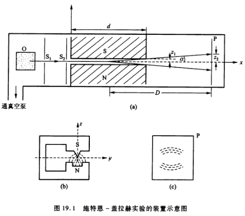
自旋角动量
- 两个电子： j-j,l-s
第五章・多电子
Compton 散射
光打电子波长变
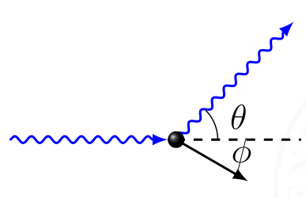
结论：
\begin{gather*} \begin{cases} \left( \frac{h}{\lambda} \right)^2+\left( \frac{h}{\lambda'} \right)^2-2 \frac{h^2}{\lambda\lambda'} \cos\theta=p\\ h\nu+m_{e}c^2=h\nu'+\sqrt{(pc)^2+(mc^2)^2} \end{cases}\rightarrow \boxed{\lambda'-\lambda=\frac{h}{m_{e}c^2}(1-\cos \theta)} \end{gather*}写法：余弦定理＋能量守恒（需要相对能总能量）
- 最大：原路返回 \(\theta=\pi\) \(\Delta\lambda=\frac{2h}{mc^2}\)
- 最小
想知道能量变化关系
\begin{gather*} h\nu'-h\nu=h\frac{c}{\lambda'}-h \frac{c}{\lambda} \end{gather*}- 相干散射——弹性散射：能量不损失 外层
- 非相干——损失能量 内层电子
逆 Compton :电子打光子
应用：测电子动量
其它：Frank hertz
第六章・ X 射线吸收
只考概念
布拉格方程得到晶格常数 特征谱（XRF）
导带价带
一般测半导体（导体无，绝缘体太宽）
作业及提高
第一章： Rutherford 实验
1-2 公式代入
1-2
(1) 动能为 \(5.00\) MeV 的 \(\alpha\) 粒子被金核以 \(90^{\circ}\) 散射时，它的瞄准距离（碰撞参数）为多大？
(2) 如果金箔厚为 \(1.0\) μ m，则入射 \(\alpha\) 粒子束以大于 \(90^{\circ}\) 散射（称为背散射）的粒子数是全部入射粒子的百分之几？
解答:
\begin{gather*} \begin{split} b &= \frac{a}{2} \cot \frac{\theta}{2} = \frac{1}{2}\frac{e^2 Z_1 Z_2}{4 \pi \epsilon_0 E_k} \cot \frac{90^{\circ}}{2}\\ &=\frac{1}{2}\frac{1.44 \, \text{fm} \cdot \text{MeV} \times 2 \times 79}{5 \, \text{MeV}}\cot \frac{90^{\circ}}{2} =\frac{1}{2} \times 45.5 \, \text{fm} \times \cot 45^\circ \\ &= \boxed{22.8 \, \text{fm}} \end{split} \end{gather*} \begin{gather*} \begin{split} \frac{\Delta N}{N}&=nt\pi b^2,\quad b=\frac{a}{2}\cot \frac{\theta}{2}\\ &= \frac{N_A \rho}{M}t\pi \frac{a}{2}\cot \frac{\theta}{2}\\ &= \frac{6.02 \times 10^{23}\times 18.88 \, \text{g/cm}^3}{197 \text{g/mol}} \times 10^{-6} \, \text{m} \times 3.142 \times (22.8 \, \text{fm})^2 \\ &= \boxed{ 9.4 \times 10^{-5}} \end{split} \end{gather*}(1) 由式(3-1)、(3-2)知碰撞参数 \(b\) 与散射角 \(\theta\) 的关系式为
\begin{gather*} b = \frac{a}{2} \cot \frac{\theta}{2} \quad \text{(式中 } a = \frac{Z_1 Z_2 e^2}{4 \pi \epsilon_0 E_k} \text{)} \end{gather*}库仑散射因子为
\begin{gather*} \frac{d\sigma}{d\Omega} = \frac{a^2}{4\sin^4\left(\frac{\theta}{2}\right)} \end{gather*}其中，\(Z_1\) 和 \(Z_2\) 分别是 \(\alpha\) 粒子和金核的原子序数，\(e\) 是电子电荷，\(\epsilon_0\) 是真空介电常数，\(E_k\) 是 \(\alpha\) 粒子
\begin{gather*} a = \frac{e^2 Z_1 Z_2}{4 \pi \epsilon_0 E_k} = \frac{1.44 \, \text{fm} \cdot \text{MeV} \times 2 \times 79}{5 \, \text{MeV}} = 45.5 \, \text{fm} \end{gather*}计算瞄准距离 $b$：
\begin{gather*} b = \frac{a}{2} \cot \frac{\theta}{2} = \frac{1}{2} \times 45.5 \, \text{fm} \times \cot 45^\circ = 22.8 \, \text{fm} \end{gather*}
(2) 方法一 根据式(3-15)、(3-16)知, 若有 \(N\) 个 \(\alpha\) 粒子打到金箔上, 在 \(d\Omega\) 方向上测得的粒子数为
\[
d N' = N n t \sigma_C d\Omega \quad \left( \text{式中} \sigma_C = \frac{a^2}{16 \sin^4 \frac{\theta}{2}}, \, d\Omega = 2\pi \sin \theta d\theta \right)
\]
已知金的摩尔质量 \(M = 197 \, \text{g/mol}\), 金的密度 \(\rho = 18.88 \, \text{g/cm}^3\), 原子核的数密度 \(n = \frac{N_A}{V_m} = \frac{N_A \rho}{M}\), \(\alpha\) 粒子束以大于 \(90^\circ\) 散射的粒子数为 \[ N' = \int N n t \sigma_c d\Omega = N \int_{90^\circ}^{180^\circ} \frac{N_A \rho}{M} t \frac{a^2}{16 \sin^4 \frac{\theta}{2}} 2\pi \sin \theta d\theta \]
大于 \(90^\circ\) 散射的粒子数与全部入射粒子的比为
\begin{gather*} \begin{split} \frac{N'}{N} &= \int_{90^\circ}^{180^\circ} \frac{N_A \rho}{M} t \frac{a^2}{16 \sin^4 \frac{\theta}{2}} 2\pi \sin \theta d\theta = \int_{90^\circ}^{180^\circ} \frac{N_A \rho}{M} t \frac{a^2}{\pi \cos \frac{\theta}{2}} d\theta \\ &= \frac{N_A \rho t \pi a^2}{4 M} \int_{90^\circ}^{180^\circ} \frac{2 d\left(\sin \frac{\theta}{2}\right)}{\sin^3 \frac{\theta}{2}} = \frac{N_A \rho t \pi a^2}{4 M} \left( \frac{1}{\sin^2 45^\circ} - \frac{1}{\sin^2 90^\circ} \right) \end{split} \end{gather*} \begin{align*} &= \frac{6.02 \times 10^{23} \, \text{mol}^{-1} \times 18.88 \, \text{g/cm}^3 \times 1.0 \times 10^{-6} \, \text{m} \times 3.142 \times (45.5 \, \text{fm})^2}{4 \times 197 \, \text{g/mol}} \\ &= 9.4 \times 10^{-5} \end{align*}则大于 \(90^\circ\) 散射的粒子数占全部入射粒子的百分比为 \(9.4 \times 10^{-3}\%\).
方法二
根据碰撞参数 \(b\) 与散射角 \(\theta\) 的关系式 \(b = \frac{a}{2} \cot \frac{\theta}{2}\), 可知当 \(\theta \geqslant 90^\circ\) 时, \(b(\theta) \leqslant b(90^\circ)\), 即对于每一个靶核，散射角大于 \(90^\circ\) 的入射粒子位于 \(b < b(90^\circ)\) 的圆盘截面内，该截面面积为 \(\sigma_c = \pi b^2(90^\circ)\), 则 \(\alpha\) 粒子束以大于 \(90^\circ\) 散射的粒子数为
\[
N' = N n t \pi b^2
\]
大于 \(90^\circ\) 散射的粒子数与全部入射粒子的比为
\begin{gather*} \begin{split} \frac{N'}{N} &= n t \pi b^2 = \frac{N_A \rho}{M} t \pi b^2\\ &= \frac{6.02 \times 10^{23} \, \text{mol}^{-1} \times 18.88 \, \text{g/cm}^3 \times 1.0 \times 10^{-6} \, \text{m} \times 3.142 \times (22.8 \, \text{fm})^2}{197 \, \text{g/mol}} \\ &= 9.4 \times 10^{-5} \end{split} \end{gather*}与方法一所得结果一致。
1-5
动能为 \(1.0 \, \text{MeV}\) 的窄质子束垂直地射在质量厚度为 \(1.5 \, \text{mg/cm}^2\) 的金箔上，计数器记录以 \(60^\circ\) 角散射的质子。计数器圆形输入孔的面积为 \(1.5 \, \text{cm}^2\)，离金箔散射区的距离为 \(10 \, \text{cm}\)，输入孔对着且垂直于射到它上面的质子。试问：散射到计数器输入孔的质子数与入射到金箔的质子数之比是多少？（质量厚度定义为 \(\rho_m = \rho t\)，其中 \(\rho\) 为质量密度，\(t\) 为靶厚。）
解：窄质子束打到金箔上，散射到 \(\theta \rightarrow \theta - \Delta\theta\) 方向上 \(\Delta\Omega\) 立体角的概率 \(\eta\) 为 \[ \eta = \frac{\Delta N}{N} = n t \sigma_C \Delta\Omega \] 式中原子核的数密度 \(n = \frac{N_A}{V_m} = \frac{N_A \rho}{M}\)，\(\Delta\Omega = \frac{S}{r^2}\)，散射截面的定义式为 \[ \sigma_C = \frac{a^2}{16 \sin^4 \frac{\theta}{2}} \] 则有 \[ \eta = \frac{\Delta N}{N} = \frac{N_A \rho t}{M} \frac{a^2}{16 \sin^4 \frac{\theta}{2}} \]
已知金的摩尔质量 \(M = 197 \, \text{g/mol}\)，金的质量厚度 \(\rho_m = \rho t = 1.5 \, \text{mg/cm}^2\)，先计算出库仑散射因子 \[ a = \frac{e^2 Z_1 Z_2}{4\pi \varepsilon_0 E_k} = \frac{1.44 \, \text{fm} \cdot \text{MeV} \times 1 \times 79}{1 \, \text{MeV}} = 113.76 \, \text{fm} \]
代入数据计算，散射到计数器输入孔的质子数与入射到金箔的质子数之比为
\begin{align*} \eta &= \frac{N_A \rho t}{M} \frac{a^2}{16 \sin^4 \frac{\theta}{2}} \frac{S}{r^2} \\ &= \frac{6.02 \times 10^{23} \, \text{mol}^{-1} \times 1.5 \, \text{mg/cm}^2 \times (113.76 \times 10^{-13} \, \text{fm})^2 \times 1.5 \, \text{cm}^2}{197 \, \text{g} \cdot \text{mol}^{-1} \times 16 \sin^4 30^\circ \times (10 \, \text{cm})^2} \\ &= 8.9 \times 10^{-6} \end{align*}第二章：光电、Bohr 、光谱
2-1 光电效应逸出功 easy
2-1
铯的逸出功为 1.9 eV,试求:
(1) 铯的光电效应阈频率及阈值波长;
(2) 如果要得到能量为 1.5 eV 的光电子,必须使用多少波长的光照射?
根据式(6-9) 爱因斯坦的光电效应方程
\begin{equation*} \frac{1}{2} m v_m^2 = h \nu - \phi \end{equation*}式中, \(\frac{1}{2} m v_m^2\) 为出射电子的最大动能, \(h \nu\) 为入射光子能量, \(\phi\) 为金属的逸出功.
(1) 铯的逸出功 \(\phi = 1.9 \text{ eV}\), 当出射电子的最大动能为 0 时, 入射光子的频率最小, 对应于金属的光电效应阈频率, 即
\begin{equation*} h \nu_0 = \phi \end{equation*}故阈频率为 \[ \nu_0 = \frac{\phi}{h} = \frac{1.9 \text{ eV} \times 3.0 \times 10^8 \text{ m/s}}{1.24 \text{ nm} \cdot \text{keV}} = 4.6 \times 10^{14} \text{ Hz} \] 阈值波长的值为 \[ \lambda_0 = \frac{c}{\nu_0} = \frac{3.0 \times 10^8 \text{ m/s}}{4.6 \times 10^{14} \text{ Hz}} = 6.5 \times 10^{-7} \text{ m} = 6.5 \times 10^2 \text{ nm} \]
(2) 若要得到光电子的能量为 \(E = \frac{1}{2} m v_m^2 = 1.5 \text{ eV}\), 则
\begin{align*} h \nu &= \frac{1}{2} m v_m^2 + \phi \\ \lambda &= \frac{c}{\nu} = \frac{hc}{\phi + E} = \frac{1.24 \text{ nm} \cdot \text{keV}}{1.9 \text{ eV} + 1.5 \text{ eV}} = 3.6 \times 10^2 \text{ nm} \end{align*}2-6 计算谱线波长 公式
2-6
在波长从 95 nm 到 125 nm 的光带范围内，氢原子的吸收光谱中包含哪些谱线？
解答
\begin{gather*} \underline{\frac{1}{\lambda}=R_H \left( \frac{1}{n}-\frac{1}{n'^2} \right)} \longrightarrow n=1\\ \lambda=\frac{1}{R_H \left( \frac{1}{1}-\frac{1}{n^2} \right)} \end{gather*} \begin{align*} n'=1 ,& \text{no}\, \text{nm}\\ n' = 2, & \quad \lambda = 121.6 \, \text{nm} \\ n' = 3, & \quad \lambda = 102.6 \, \text{nm} \\ n' = 4, & \quad \lambda = 97.25 \, \text{nm}\\ n'=5,& \quad \lambda = 94.98\, \text{nm} \end{align*}3 条，n =2,3,4。
在通常温度下，氢原子都处于基态，所以吸收光谱是从 \(n=1\) 能级向高能级跃迁产生的。
2由式(8-4)得 \[ \lambda = \frac{1}{R_H \left(1 - \frac{1}{n'^2}\right)} \]
由表8.1知，\(R_H = 109677.58 \, \text{cm}^{-1}\)，据题意要求波长范围 \(95 \, \text{nm} < \lambda < 125 \, \text{nm}\)，所以 \(n'\) 取 2, 3, 4，其对应的波长分别为
\begin{align*} n' = 2, & \quad \lambda = 121.6 \, \text{nm} \\ n' = 3, & \quad \lambda = 102.6 \, \text{nm} \\ n' = 4, & \quad \lambda = 97.25 \, \text{nm} \end{align*}第三章：波动方程
3-1 物质波长 公式
3-1
电子的能量分别为 \(10\) eV、\(100\) eV 和 \(1000\) eV 时,试计算其相应的德布罗意波长.
电子速度远小于光速,则电子动量和能量的关系为 \[ p = \sqrt{2 m_e E} \]
电子的德布罗意波长为 \[ \lambda = \frac{h}{p} = \frac{h}{\sqrt{2 m_e E}} = \frac{h c}{\sqrt{2 m_e c^2 E}} = \frac{1.24 \text{ nm} \cdot \text{keV}}{\sqrt{2 \times 0.511 \text{ MeV} \cdot E}} \]
对能量分别为 \(10 \text{ eV}、100 \text{ eV}、1000 \text{ eV}\) 的电子,对应的德布罗意波长分别为
\begin{align*} \lambda_1 &= \frac{1.24 \text{ nm} \cdot \text{keV}}{\sqrt{2 \times 0.511 \text{ MeV} \cdot 10 \text{ eV}}} = \frac{1.226 \text{ nm}}{\sqrt{10}} = 0.39 \text{ nm} \\ \lambda_2 &= \frac{1.24 \text{ nm} \cdot \text{keV}}{\sqrt{2 \times 0.511 \text{ MeV} \cdot 100 \text{ eV}}} = \frac{1.226 \text{ nm}}{\sqrt{100}} = 0.123 \text{ nm} \\ \lambda_3 &= \frac{1.24 \text{ nm} \cdot \text{keV}}{\sqrt{2 \times 0.511 \text{ MeV} \cdot 1000 \text{ eV}}} = \frac{1.226 \text{ nm}}{\sqrt{1000}} = 0.039 \text{ nm} \end{align*}3-15 势能井波动方程 hard
3-15
试求在 \(E < V_0\) 的束缚态情况下：
\begin{gather*} V(x)= \begin{cases} \infty&\quad x<0\\ 0&\quad 0\leq x\leq a\\ V_0&\quad x>a \end{cases} \end{gather*}（1）粒子能级的表达式；
（2）证明在此阱中至少存在一个束缚态的条件是，阱深 \(V_0\) 和阱宽 \(a\) 之间满足关系式： \[ V_0 a^2 \geq \frac{h^2}{32m} \]
解： 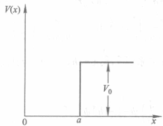
（1）\(V(x)\) 与 \(t\) 无关，是定态问题。其定态薛定谔方程 \[ -\frac{\hbar^2}{2m} \frac{d^2}{dx^2} \psi(x) + V(x) \psi(x) = E \psi(x) \] 在各区域的具体形式为
\begin{align*} \text{I} \quad & x < 0 \\ -\frac{\hbar^2}{2m} \frac{d^2}{dx^2} \psi_1(x) + V(x) \psi_1(x) &= E \psi_1(x) \quad (1) \\ \text{II} \quad & 0 \leq x \leq a \\ -\frac{\hbar^2}{2m} \frac{d^2}{dx^2} \psi_2(x) &= E \psi_2(x) \quad (2) \\ \text{III} \quad & x > a \\ -\frac{\hbar^2}{2m} \frac{d^2}{dx^2} \psi_3(x) + V_0 \psi_3(x) &= E \psi_3(x) \quad (3) \end{align*}由于在方程（1）中，由于 \(V(x) = \infty\)，要等式成立，必须 \(\psi_1(x) = 0\)。
方程（2）可变为 \[ \frac{d^2 \psi_2(x)}{dx^2} + \frac{2mE}{\hbar^2} \psi_2(x) = 0 \] 令 \(k_1^2 = \frac{2mE}{\hbar^2}\) 得 \[ \frac{d^2 \psi_2(x)}{dx^2} + k_1^2 \psi_2(x) = 0 \] 其解为 \[ \psi_2(x) = A \sin(k_1 x) + B \cos(k_1 x) \]
方程(3)可变为
令 \(k_2^2 = \frac{2 m (V_0 - E)}{\hbar^2}\) 得 \[ \frac{d^2\psi_3(x)}{dx^2} + \frac{2 m (E - V_0)}{\hbar^2} \psi_3(x) = 0 \] \[ \frac{d^2\psi_3(x)}{dx^2} - k_2^2 \psi_3(x) = 0 \]
其解为 \[ \psi_3(x) = C e^{k_2 x} + D e^{-k_2 x} \]
当 \(x \rightarrow \infty\) 时, \(\psi_3(x)\) 有限, 则有 \(C = 0\).
根据波函数连续性条件得
\begin{align*} \psi_2(0) &= B = \psi_1(0) = 0 \\ \psi_2(a) &= A \sin k_1 a = \psi_3(a) = D e^{-k_2 a} \end{align*}\[ \left. \frac{d\psi_2}{dx} \right|_{x=a} = A k_1 \cos k_1 a = \left. \frac{d\psi_3}{dx} \right|_{x=a} = -D k_2 e^{-k_2 a} \] 由式(4)、(5)得 \[ \tan k_1 a = -\frac{k_1}{k_2} \] 即 \(\tan \sqrt{\frac{2 m E a^2}{\hbar^2}} = -\sqrt{\frac{E}{V_0 - E}}\), 此即为粒子能级的表达式.
(2) 已知 \(\tan k_1 a = -\frac{k_1}{k_2}\), 因为 \(k_1 > 0, k_2 > 0\) 则有 \(\tan k_1 a < 0\), 故 \(k_1 a > \frac{\pi}{2}\), 则
\begin{align*} & k_1 = \sqrt{\frac{2 m E}{\hbar^2}} < \sqrt{\frac{2 m V_0}{\hbar^2}} \\ & \sqrt{\frac{2 m V_0}{\hbar^2}} a > k_1 a > \frac{\pi}{2} \end{align*}由此可得 \[ \sqrt{\frac{2 m V_0}{\hbar^2}} a > \frac{\pi}{2} \]
解得 \[ V_0 a^2 \geqslant \frac{\pi^2 h^2}{8 m} = \frac{h^2}{32 m} \]
第四章：自旋
4-1 磁场中能量 公式
4-1
一束电子进入 1.2 T 的均匀磁场时，试问电子自旋平行于和反平行于磁场的电子的能量差为多大？
电子具有自旋，则存在与自旋相联系的磁矩 \(\mu_e\)，它在磁场作用下的能量为 \(U = -\mu_e \cdot B\)
电子自旋方向与磁场平行和反平行，则有 \[ U = -\mu_e \cdot B = -\mu_e B = g_e m_e \mu_B B \quad \left( \text{其中 } g_e = 2, m_e = \pm \frac{1}{2} \right) \]
所以电子自旋平行于和反平行于磁场的电子的能量为 \(U = \pm \mu_B B\)
则电子自旋平行于和反平行于磁场的电子的能量差为 \[ \Delta U = 2 \mu_B B = 2 \times 0.578 \times 10^{-18} \, \text{eV} \cdot \text{T}^{-1} \times 1.2 \, \text{T} = 1.4 \times 10^{-18} \, \text{eV} \]
升级补充 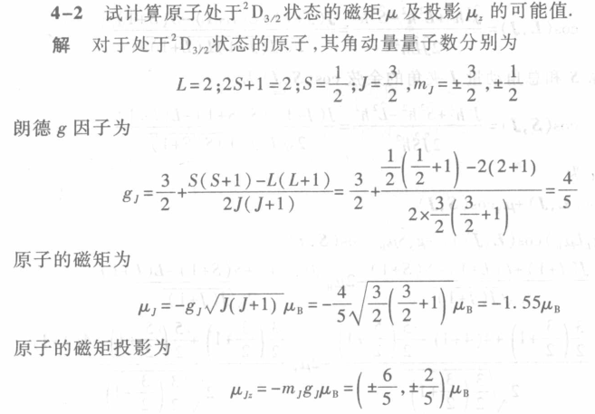
4-5 SG 实验电子状态 公式 hard
4.5
在施特恩-格拉赫实验中（图19.1），不均匀横向磁场梯度为 \(\frac{\partial B_z}{\partial z}=5.0 \, \text{T/cm}\)，磁极的纵向范围 \(d=10 \, \text{cm}\)，磁极中心到屏的距离 \(D=30 \, \text{cm}\)，使用的原子束是处于基态 \(^{4}\text{F}_{3/2}\) 的钒原子，原子的动能 \(E_k=50 \, \text{MeV}\)。试求屏上线束边缘成分之间的距离。
从表达式分析电子状态 | SG:z | Ek → kT:\(E=\frac{1}{2}mv^2=\frac{3}{2}kT\)
\begin{gather*} 2s+1=4\rightarrow s=\frac{3}{2};F\rightarrow l=3;j=\frac{3}{2}\\ m=\pm \frac{3}{2},\pm \frac{1}{2}\\ \begin{split} z&=\mu_z \frac{\partial B_z}{\partial z}\frac{Dd}{3kT} = -m g \mu_B \frac{\partial B_z}{\partial z}\frac{Dd}{3kT} \\ &= -\frac{3}{2}\mu_{B} \left( \frac{3}{2}+\frac{s(s+1)-l(l+1)}{2j(j+1)} \right)\frac{\partial B_z}{\partial z}\frac{Dd}{2E_k} \\ &= -\frac{3}{2}\times \frac{2}{5} \times 5.0 \times \frac{30 \times10}{2\times 50} \\ &= \boxed{1.0 \times 10^{-2} \text{ m}} \end{split} \end{gather*}矾原子的基态为 \({}^4 F_{3/2}\), 其角动量量子数分别为 \[ L = 3; \quad 2S + 1 = 4, \quad S = \frac{3}{2}; \quad J = \frac{3}{2}, \quad m_j = \pm \frac{3}{2}, \pm \frac{1}{2} \]
朗德 g 因子为 \[ g_1 = \frac{3}{2} + \frac{S(S+1) - L(L+1)}{2J(J+1)} = \frac{3}{2} + \frac{\frac{3}{2}\left(\frac{3}{2} + 1\right) - 3(3 + 1)}{2 \times \frac{3}{2}\left(\frac{3}{2} + 1\right)} = \frac{2}{5} \]
则有 \[ m_1 g_1 = \pm \frac{3}{5}, \pm \frac{1}{5} \]
原子束打到屏上，偏离 x 轴的距离为 \[ z = \mu_2 \frac{\partial B_1}{\partial z} \frac{d D}{3 k T} = -m_1 g_1 \mu_B \frac{\partial B_2}{\partial z} \frac{d D}{2 E_1} \]
屏上线束边缘成分之间距离为
\begin{equation*} \begin{split} \Delta z &= \frac{6}{5} \mu_B \frac{\partial B_2 d D}{\partial z 2 E_{k}} = \frac{6}{5} \times 0.5788 \times 10^{-4} \text{ eV/T} \times 5.0 \text{ T/cm} \times \frac{30 \text{ cm} \times 10 \text{ cm}}{2 \times 50 \text{ meV}} \\ &= \boxed{1.0 \times 10^{-2} \text{ m}} \end{split} \end{equation*}套路总结：
- 写 lsj;求 g m(规律：当 \(j=\frac{3}{2},m=\pm \frac{3}{2}\))
- 写 SG 公式 z;代入
相似题 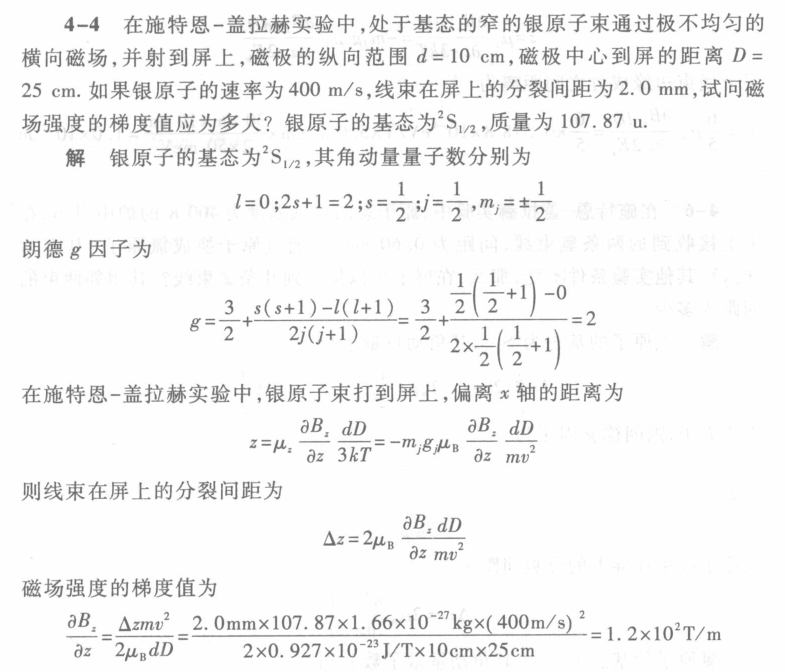
更高难度 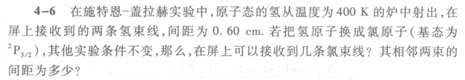 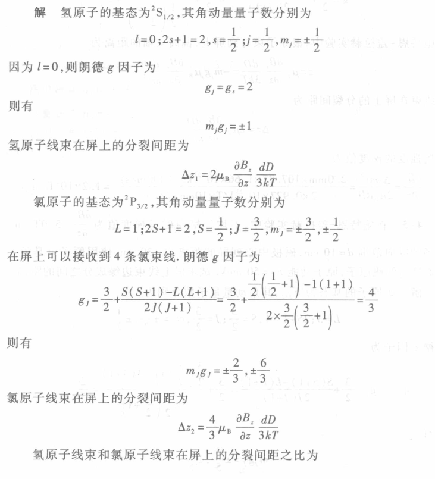
\begin{gather*} \frac{\Delta z}{\Delta z}=\frac{3}{2}\\ \Delta z_2=0.6 \end{gather*}第五章・LSJ
5-2 L ⋅ S
5-2
计算 \(^4D_{3/2}\) 态的 \(\mathbf{L} \cdot \mathbf{S}\)。
对于 \(^4D_{3/2}\) 态，其角动量量子数分别为 \[ S = \frac{3}{2}, \quad L = 2, \quad J = \frac{3}{2} \]
角动量分别为 \[ S = \sqrt{s(s+1)}\hbar = \sqrt{\frac{3}{2} \times \left(\frac{3}{2} + 1\right)}\hbar = \frac{\sqrt{15}}{2}\hbar \] \[ L = \sqrt{l(l+1)}\hbar = \sqrt{2 \times (2 + 1)}\hbar = \sqrt{6}\hbar \] \[ J = \sqrt{j(j+1)}\hbar = \sqrt{\frac{3}{2} \times \left(\frac{3}{2} + 1\right)}\hbar = \frac{\sqrt{15}}{2}\hbar \]
由 L-S 耦合有 \(J = L + S\)，则 \[ J^2 = L^2 + S^2 + 2\mathbf{L} \cdot \mathbf{S} \]
由此得 \[ \mathbf{L} \cdot \mathbf{S} = \frac{1}{2}(J^2 - L^2 - S^2) = \frac{1}{2}\left(\frac{15}{4}\hbar^2 - 6\hbar^2 - \frac{15}{4}\hbar^2\right) = \boxed{-3\hbar^2} \]
5-7 原子态
5-7
依 L-S 耦合法则，下列电子组态可形成哪些原子态？其中哪个态能量最低？
(1) \(n p^4\); (2) \(n p^5\); (3) \(n d(n' d)\).
- n p4: 有 4 个电子填入 p 轨道（每个轨道角动量 l=1）
解 (1) \(n p^4\) 与 \(n p^2\) 具有相同的原子态.
对 \(n p^2\), \(l_1=l_2=1\), \(L=2,1,0\); \(s_1=s_2=\frac{1}{2}\), \(S=0,1\)
根据偶数定则
当 \(S=0\) 时, \(L=0,2\), 对应的原子态为 \(^1S_0, ^1D_2\)
当 \(S=1\) 时, \(L=1\) 对应的原子态为 \(^3P_{2,1,0}\)
利用洪特定则（对于一个给定的电子组态形成的原子态，当某原子态具有的 S 最大时，它处的能级位置最低；对同一 S，又以 L 值大的为最低；对于同科电子关于同一 L 值而 J 值不同的诸能级次序，当同科电子数小于或等于闭壳层占有数的一半时，具有最小 J 值的能级处在最低，这称为正常次序；当同科电子数大于闭壳层的一半时，具有最大 J 值的能级为最低。）
\(n p^4\) 形成的诸原子态中能量最低的是 \(S=1, L=1\)，由于 p 电子数超过半满，J 反常序，\(J=L+S=1+1=2\)，能量最低的原子态为 \(^3P_2\)。
(2) \(n p^5\) 与 \(n p^1\) 具有相同的原子态.
对 \(n p^1, l=1, s=\frac{1}{2}\)，对应的原子态为 \(^2P_{1/2}, ^2P_{3/2}\)。
利用洪特定则，由于 \(np^5\)，有 5 个 p 电子数超过半满，J 反常序，\(J=l+s=1+\frac{1}{2}=\frac{3}{2}\)，能量最低的原子态为 \(^2P_{3/2}\)。
(3) 对 \(n d(n' d), l_1=l_2=2, L=4,3,2,1,0; s_1=s_2=\frac{1}{2}, S=0,1\) 形成的原子态有
\(^1S_0, ^1P_1, ^1D_2, ^1F_3,^1G_4, ^3S_1, ^3P_{2,1,0}, ^3D_{3,2,1}, ^3F_{4,3,2}, ^3G_{5,4,3}\)
利用洪特定则，在这些态中能量最低的是 \(S=1, L=4\)，由于 p 电子数未达到半满，J 正常序，\(J=|L-S|=4-1=3\)，能量最低的原子态为 \(^3G_3\)。